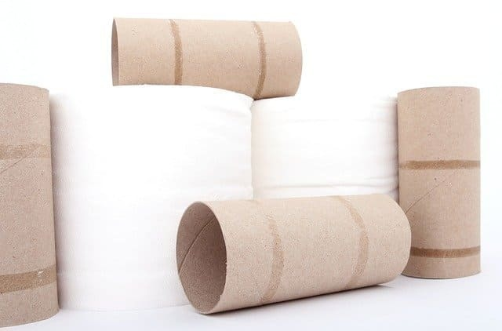

陰のう水腫の鍼灸
陰のう内部に液体がたまり柔らかく腫れる状態です。泌尿器科での原因鑑別と手術適応評価を最優先に、安定期の体調管理を補完します。
まず知っておきたい要点と改善の流れ
陰のう水腫は、陰のう内部の臓器のすき間に液体がたまる状態です。先天性は胎児期の鼠径腹膜管が閉じず腹腔と交通していることが原因で、2〜3歳までに自然閉鎖することが多い一方、後天性は原因不明のほか精巣上体炎・精巣炎などの炎症や感染、外傷、腫瘍、手術後、心不全・肝硬変などの全身疾患、リンパ排出障害が関与します。後天性は自然治癒しにくく、泌尿器科での鑑別が重要です。（公式解説）
このようなお悩みはありませんか？
- ✓片側または両側の陰のうが柔らかく腫れて左右差が気になります
- ✓強い痛みはないものの、陰のうの重だるさや不快感があります
- ✓夕方になると腫れが大きくなり、横になると少し軽く感じます
- ✓入浴時に陰のうの膨らみに気づき、他の病気ではないか不安です
当院の施術アプローチ・改善の流れ
なぜ鍼灸で改善へ向かうのか？（作用機序の図解）
陰のう水腫に対する鍼灸は、仙髄排尿反射（陰部神経）と骨盤底の協調調整機序を通じて、お体本来の回復力を引き出します。

膀胱・尿道括約筋を支配する仙髄神経（S2〜S4）領域の経穴へ的確にアプローチします。
弱まった骨盤底筋の収縮サポートと、過敏になった膀胱排尿筋の鎮静をバランスよく促します。
腰殿部と下腹部の血流を高め、冷えや過緊張による頻尿・違和感・痛みを和らげます。
泌尿器科の評価やセルフエクササイズと併用し、安心して外出できる日常の回復を支えます。
院長YouTube解説・関連動画
陰のう水腫の改善方法は先天性の場合と後天性の場合で違う
陰のう水腫の改善方法は、先天性の場合と後天性の場合で違います。先天性の場合、2～3歳くらいまでに自然に改善することが多いため、まず経過をみます。
3～4歳以降になっても腫れが改善しない場合や鼠径ヘルニアを合わせて発症している場合は、手術を行います。
後天性の場合は自然に改善することはありません。しかし、大きさがあまり大きくなく問題にならない場合は、そのまま放っておいて経過を見ます。大きい場合や大きさによって問題が起こっている場合は、手術を行います。
後天性の陰のう水腫の改善方法に、注射器で中にたまっている液体を抜く方法もあります。しかし、その効果は一時的なことが多く、再び液体がたまって大きくなります。
陰のう水腫の改善方法は、その原因や症状の重さに応じて異なります。以下に、一般的な改善方法を挙げます。
経過観察:陰のう水腫が軽微で、痛みや不快感がない場合は、特に改善を必要としないことが多く、経過観察が行われます。
サポート下着の使用:陰のうのサポート性の高い下着を着用することで、陰のうにかかる圧力を減らし、不快感を軽減することができます。
鎮痛剤の使用:痛みや不快感がある場合は、非ステロイド性抗炎症薬（NSAIDs）などの鎮痛剤が処方されることがあります。
手術:陰のう水腫が大きくて不快感がある場合や、他の改善に反応しない場合は、手術が必要になることがあります。手術は通常、局所麻酔または全身麻酔下で行われ、陰のうから余分な液体を取り除きます。
針穿刺:液体を除去するために、陰のうに針を刺して液体を抜くことが行われる場合があります。ただし、これは一時的な解決策であり、水腫が再発する可能性があります。
他の病状の改善:陰のう水腫が他の病気によって引き起こされている場合、その根本的な原因を改善することが必要です。
新生児や幼児に見られる先天性の陰のう水腫は、多くの場合、時間とともに自然に解消します。ただし、成人の場合や症状が続く場合は、改善を行うことが必要になることがあります。どの改善法が適切かは、年齢、症状の重さ、および全体的な健康状態によって異なります。
陰のう水腫の改善において、薬は主要な改善法ではありませんが、症状を緩和するために使用されることがあります。以下は、陰のう水腫に関連する症状を管理するために使用される可能性のある薬物です。
非ステロイド性抗炎症薬（NSAIDs）:イブプロフェンやナプロキセンなどのNSAIDsは、痛みや不快感を緩和するために使用されることがあります。これらの薬は、炎症を減少させ、痛みを和らげる効果があります。
鎮痛剤:より強い痛みの場合、医師はより強力な鎮痛剤を処方することがあります。
感染症に対する抗生物質:陰のう水腫が感染症によって引き起こされている場合（例えば精巣炎や精巣上体炎）、抗生物質が処方されることがあります。
利尿薬:体液の蓄積を減少させるために、場合によっては利尿薬が使用されることがあります。ただし、これは一般的な治療法ではありません。
陰のう水腫の改善方法は症状や原因によって異なるため、薬は医師の指導の下で行う必要があります。
先天性の陰のう水腫は、体を調べる機会やおむつ交換のときに発見されることが多いです。
しかし、大人にはほとんどそのような機会はないため、後天性の陰のう水腫は発見されにくいです。お風呂に入っている時などに自分で陰のうの左右差を確認するなどして、大きさの変化に気がつくようにしておくことが早期発見につながります。


腎・泌尿器・排尿トラブル・透析サポートのツボ図解
実際の施術ではお一人おひとりの体質・症状に合わせて選穴しますが、過活動膀胱・尿失禁・前立腺症状・CKD/透析QOLの標準治療併用ケアの臨床でよく用いられる代表的なツボの目安です。

📌 代表的なツボの詳細一覧表を開く（6穴） ▼
| ツボ名 | 位置の目安 | 主な狙い | セルフケアの注意点 |
|---|---|---|---|
| 腎兪（じんゆ） | 腰のくびれの高さ、背骨から指2本分外側 | 腎・泌尿器周囲の自律神経と冷え・倦怠感ケア | 腰部を温めることで夜間頻尿の負担も和らぎます。 |
| 次髎（じりょう） | 仙骨の2番目のくぼみ（お尻の上中央付近） | 仙髄排尿神経（S2〜S4）を介した膀胱機能調整の最重要穴 | 腹圧性・切迫性尿失禁や過活動膀胱の国際RCTでも定番です。 |
| 関元（かんげん） | おへそから指4本分下 | 下腹部の冷え改善・骨盤内の循環サポート | 排尿を済ませた状態で優しく温めます。 |
| 中極（ちゅうきょく） | 恥骨のすぐ上、おへそから指5本分下 | 膀胱の過敏性・残尿感・頻尿の調整 | 強く押し込まず軽く手を当てる・温める程度にします。 |
| 三陰交（さんいんこう） | 内くるぶしの上から指4本分上 | 脛骨神経を介した膀胱過活動の鎮静・睡眠の質改善 | 透析中の方はシャント腕を避け非透析日に安全に行います。 |
| 太渓（たいけい） | 内くるぶしとアキレス腱の間 | 腎経の原穴として冷え・むくみ・夜間頻尿の土台づくり | 足首を冷やさない工夫と合わせてケアします。 |
国際査読論文の科学的エビデンス
国際的な医学データベース（PubMed・Cochrane等）で報告されている過活動膀胱・尿失禁・前立腺症状・CKD/透析QOLの標準治療併用ケア領域の代表的な査読済み鍼灸研究をまとめています（標準治療との併用や研究上の限界を含めて正確に掲載）。
📚 査読論文データ・PubMed出典リンクを開く（4件） ▼
| 年・研究デザイン | 対象・規模 | 主な結果 | 限界・出典 |
|---|---|---|---|
| 2017年 大規模多施設RCT | 腹圧性尿失禁女性 504名（12病院・腰仙部電鍼） | 6週時の1時間パッド尿漏れ量は電鍼-9.9g vs シャム-2.6g（差7.4g, P<0.001）、30週まで失禁減少持続。 | 30週以降の長期持続は今後の検証課題。 JAMA (PMID: 28655016) |
| 2021年 大規模多施設RCT | 慢性前立腺炎/CPPS男性 440名（10病院） | 8週時のレスポンダー率60.6% vs シャム36.8%（OR 2.6, P<0.001）、32週時点でも61.5% vs 38.3%持続。 | 細菌性前立腺炎・悪性疾患の除外が前提。 Ann Intern Med (PMID: 34399062) |
| 2022年 Cochraneレビュー | 過活動膀胱 15研究（n=1,395） | 薬物比較で症状改善率RR 1.25・軽度有害事象減少（RR 0.34）・夜間頻尿減少。重篤な有害事象なし。 | シャム比較では不確実、GRADE低〜非常に低。 Cochrane (PMID: 36148895) |
| 2023年 メタ解析 | 過活動膀胱 30研究統合 | シャム比較でOABSS有意改善（MD -1.13, P=0.01）、薬物併用でOABSS MD -2.28（P<0.00001）。 | 異質性が高く（I²=67〜94%）、GRADE低〜非常に低。 Front Neurol (PMID: 36712423) |
参考文献・出典
- 銀座そうぜん鍼灸院「陰のう水腫の公式解説ページ」
- 2017年 大規模多施設RCT（腹圧性尿失禁女性 504名（12病院・腰仙部電鍼））— JAMA (PMID: 28655016)
- 2021年 大規模多施設RCT（慢性前立腺炎/CPPS男性 440名（10病院））— Ann Intern Med (PMID: 34399062)
- 2022年 Cochraneレビュー（過活動膀胱 15研究（n=1,395））— Cochrane (PMID: 36148895)
- 2023年 メタ解析（過活動膀胱 30研究統合）— Front Neurol (PMID: 36712423)
よくある質問（FAQ）
Q. 陰のう水腫に痛みが出てきた場合も鍼灸を受けてよいですか？▼
Q. 針で水を抜く処置を受ければ完治しますか？▼
あわせて読まれる関連疾患（泌尿器のお悩み）
精巣上体に細菌感染が起こり強い痛みや腫れ・発熱を生じる疾患です。精巣捻転との緊急鑑別と抗菌薬治療が必須で、急性期の鍼灸は禁忌です。
精索の静脈が逆流・拡張して瘤状になる状態です。泌尿器科での精査と手術適応の評価を最優先に、経過観察期や術後の体調面を支援します。
尿の結晶が尿管に詰まり激しい痛みを起こす状態です。激痛発作や発熱・水腎症合併時は救急・泌尿器科が最優先で、安定期に補完ケアを行います。
HPV感染により性器や肛門周囲にイボが生じる性感染症です。皮膚科・泌尿器科の標準治療を最優先に、全身の体調管理を支えます。
根本治療は外科手術で、嵌頓時は緊急受診が必須です。患部への直接刺鍼は行わず、術後や安定期の便秘・体質ケアを支えます。
単純ヘルペスウイルスによる性器の水疱・潰瘍と痛みを生じる感染症です。抗ウイルス薬治療が最優先で、水疱・急性期の患部施術は禁忌です。
おひとりで悩まず、まずはご相談ください
銀座本院・川口・大宮・横浜・博多・田無の各院でご予約を承っております。